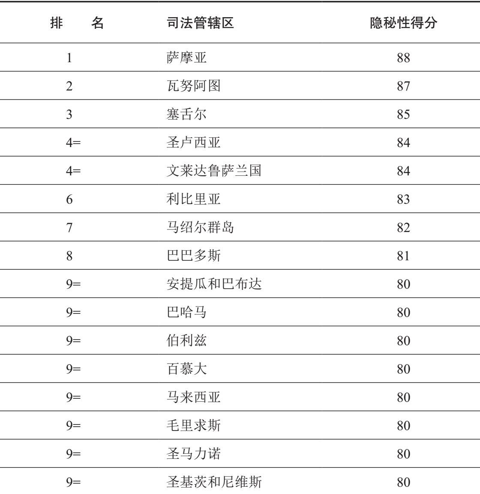
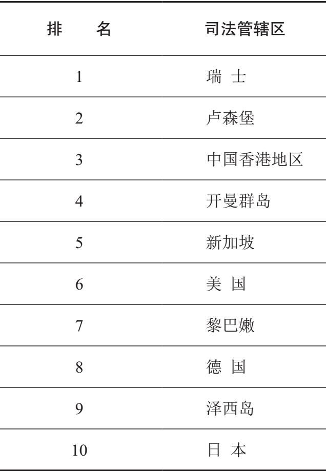

腐败被社会科学家称为“邪恶”的问题，意思是说它极为复杂，永远只能得到部分解决；它可以遏制，但无法根除。国家在对这个邪恶问题的应对方面发挥着关键作用，可以采取“大棒”（抑制）、“胡萝卜”（激励）、“行政和技术”以及“其他”方法。
大棒措施
国家可以用来减少腐败的最明显的“大棒”是法律制度。博茨瓦纳是非洲最廉洁的国家，对此该国当局有时给出的解释是，它们的起诉率远高于国际平均水平。起诉对象既可能是受贿者也可能是行贿者。
但是，起诉不是唯一的考虑因素；定罪率和刑罚的严厉程度也很重要。如果对被判定腐败的人处罚宽松，司法系统将无法起到有效的威慑作用。一些国家的确对腐败判处重刑。2011年初，美国宾夕法尼亚州的一名法官被判处28年监禁，原因在于为了从两名创立并运营私立少年拘留中心的商人那里得到大笔贿赂，该法官以错误的量刑把数千名儿童关进少年监狱；在美国，这是广为人知的“孩子换金钱”丑闻。
遗憾的是，严厉的处罚在全球范围内并不多见；那些腐败罪名成立的人被判处的刑罚通常都很温和。2014年3月，美国一名边境检查员被发现与毒品和人口贩子勾结达近十年之久，却只被圣迭戈一家法院判处七年半的监禁。与其他多数案例相比，这已经算比较严厉的了。如果我们采纳腐败的宽泛定义，把私人企业的不端行为也纳入考虑，还可以看到2005年在德国，大众汽车两名高管深度卷入“性、贿赂和腐败丑闻”；2008年，此案被判罪名成立，当事人获得短期徒刑（两年零九个月）和短暂缓刑期（12个月），被指量刑过轻。
有时，腐败罪名成立的人之所以得到宽大处罚，是因为配合当局来查处其他卷入不当行为的人。举一个例子：2014年1月，得克萨斯州一名政治顾问因腐败罪只被判处十个月监禁（外加罚款和狱后察看）；情况很明显，他之所以被从轻发落，是因为“透露了秘密”，供出建筑公司与地方官员以及一名前法官之间的腐败，使多人被定罪。
被证明行事腐败的人往往还能全然躲过刑事诉讼，只面临行政诉讼。撤职这样的处罚可能会令人尴尬，但与监禁相比，却不会有严重的长期负面影响，因此便少了威慑作用。
另一方面，有十个国家把死刑作为惩治腐败的可能刑罚，不过其中只有中国会经常动用。近年来，中国的多名国家工作人员被判处死刑或面临死刑威胁。对于高级官员来说，死刑一般会缓期执行，他们最终会受到长期监禁，但还是有已经 被处决的，比如杭州、沈阳和苏州三市的原副市长 [9] 。2013年前，死刑在越南很少使用；由于越南公众对腐败的关注，2013和2014年，该国至少有三名银行系统官员因侵吞国有银行资金被判处死刑。
严刑峻法并非用法律制度来打击腐败所面临的唯一问题，对法律的滥用也是一个问题。在许多国家，司法系统高度政治化，法治孱弱。在此情形下，被告若不能自证清白一般就被认为有罪，那些在中立观察者看来并不腐败的人，可能会出于纯粹的政治原因而被诬陷和定罪（例如身为向威权式执政党发出挑战，或者批评了国家领导人的政党党员）。
就国家来说，在政治光谱的另一端可能会出现另一个问题。瑞典非常重视对公民自由的捍卫，禁止执法机构发起诱捕行动（针对犯罪嫌疑人）或设置圈套（针对非犯罪嫌疑人）。虽然强有力的法治观点支持着瑞典在诱捕问题上的立场，反对诱捕行动的主张还是相当无力，它意味着一个潜在的强大反腐工具没有派上用场。而且，瑞典在这方面前后不一：它允许拦截妓女的潜在客户的移动电话（在瑞典卖淫是合法的，嫖娼却是非法的）。
如果官员生活奢侈，与他们申报的收入看起来不相称，国家应该展开调查。在许多国家，官员现在必须申报收入和资产，这是减少腐败的一种方式。但是，许多腐败官员都以少报数额了事。这就是为什么深入审核他们的收入和支出，包括查询银行账户，原则上是国家适于采取的措施。
遗憾的是，这种方法效用有限。明显的一点是，一些腐败官员，尤其是精英层面的，会将不义之财存入隐蔽的海外账户，使政府当局无法查询。另一个问题是，一些民权活动人士认为，这样的调查是在侵犯隐私，在以法治为基础的民主国家令人无法接受。考虑到腐败的潜在危害，这种说法是无力的；腐败的受害者也有权利，如果可以证明收入乃合法取得，那些受到调查的人应该无所畏惧。当然，危险在于，一些国家会蛮横行事；但是这更可能发生在威权国家中，在那里个人反正几无权利可言，公民权利的说法在此情形下基本上是无稽之谈。
法院的存在是为了主持公道，立法机构的责任则在于通过法律。但是情况往往是，与腐败相关的法律或者没有，或者存在严重不足。有时，法律含糊不清或充满缺陷，辩护律师很容易为受到腐败指控的当事人做出有利陈述，说法律没有明确禁止或并不明确适用于特定类型的不端行为。因此，各国有责任加强反腐立法。法律之所以无力或含糊，有时与制度未能与时俱进有关，毕竟法律的修订和完善都需要时间；另一个因素是，议员往往有自己的既得利益，无意通过强硬、明确的立法；一旦通过，他们自己那见不得人的勾当就会暴露出来，受到惩罚。
许多国家和地区现在有专门的反腐机构（ACAs）。新加坡在反腐方面较为成功，当局常常将之部分归因于该国建立了世界上第一个独立的反腐机构——贪污调查局（CPIB）。该调查局成立于1952年，一直表现出色，使新加坡的腐败程度保持在较低水平。另一个卓有成效的反腐机构是香港特区廉政公署（ICAC，1974年成立），而成立于1994年的博茨瓦纳腐败和经济犯罪问题管理局（DCEC）同样成绩骄人。除了这三个通常被视为典范的反腐机构，其他的类似机构则远为逊色。
反腐机构表现不佳有很多原因，比如资金不足和责任不清。后者往往是因为继任的政府在设立新机构后没有解散老的机构，造成分工不明，部门之间互相扯皮。研究亚洲腐败的权威专家乔·S.T.奎令人信服地提出，贪污调查局能在新加坡获得成功、廉政公署能在中国香港地区获得成功，一个重要原因是两者都独自承担着打击腐败的责任（这一点也适用于博茨瓦纳）；在多数其他国家和地区，反腐机构则不止一个。第四个问题是，这些机构一般不够独立于调查对象。世界上许多调查警方腐败的反腐机构，都被要求利用警察进行调查。与这种做法相反，贪污调查局和廉政公署都有自己的调查力量，分别向新加坡总理办公室和中国香港特区行政长官直接负责。
在一些国家，对腐败分子施加“大棒”的一种常见方式是进行公开羞辱。例如，南非司法部长在2013年2月宣布，一旦选定媒体，政府将公布被判犯有腐败罪的人的姓名；6月，被判严重欺诈和腐败罪成立的42人，名字便被公布在南非的政府网站上。
与点名羞辱腐败者的做法密切相关的一项政策，是把被发现卷入公职人员腐败的私人公司公开列入黑名单（取消资格）。新加坡在此领域也一直走在前列。1996年1月，新加坡当局取消了五大公司，包括西门子（德国）、英国绝缘电缆（英国）和倍耐力（意大利），在五年内向新加坡承包合同投标的资格，因为这些公司被发现向新加坡官员行贿。西门子也被其他多个国家，包括意大利、斯洛伐克和巴西取消过资格，还在另一些国家（如阿根廷）被控腐败。
可用来惩罚行贿公司的另一种方法是提起诉讼。菲律宾政府就是这么做的：西屋电气公司在1980年代建造了巴丹核电厂，之后从未运行过，直至1999年决定封存；该项目没有得到授权，因为相当靠近一个主要的地震断层线和一座1991年爆发过的火山。遗憾的是，菲律宾当局无法说服美国根据其《反海外腐败法》审判西屋公司，原因一直未明。不过，提起诉讼的可能性仍然存在。
最后的“大棒”法就是，对于正在盘算着涉身腐败的人，当局威胁在将来加以惩罚；一个有力的方法是威胁取消退休金。
胡萝卜措施
公元1世纪，罗马历史学家塔西佗写道：“国家越腐败，法律越烦冗。”这个说法虽有些笼统，却不乏道理，我们有必要考察除了引入越来越多的规则，国家还可以通过哪些方式来反腐。
政府可以利用一系列激励措施来努力减少腐败。措施之一是改善官员的工作条件，特别是提高工资；新加坡、格鲁吉亚以及执行程度稍逊的俄罗斯针对执法官员的反腐政策之所以取得成功，在评论者看来与大幅加薪是有关系的。不过与多数反腐措施一样，这种方法也有问题。许多显然极为腐败的国家也都是赤贫国家，没有财力将官员工资提得很高，以至于在某些评论者看来能够减少腐败。其次，仅仅提高工资而不同时加强“大棒”措施，往往意味着在现实中腐败官员拿着更高的薪水，同时 继续收受贿赂；他们左右逢源，国家却两头落空：向官员付酬更多，财政收入却并未增加。
没有财力为官员群体全面加薪的国家也可以另辟蹊径，这条路径仍是基于物质激励，但成本更低。那就是向反腐过程中发挥积极作用的官员提供经济奖励。遗憾的是，此种做法可能会适得其反。例如，匈牙利当局多年前决定奖励某些海关官员，这些官员把行贿以求走私物品通关的旅客揭发了出来。一名海关官员成功获得大量奖励，收入比总理还高。这就引起了怀疑，后经调查得知，该官员为了获取尽可能多的收入一直在进行虚假指控。该激励方法的一个变化形式是，奖励那些洁身自好或者检举腐败同僚的官员。
到目前为止，激励的重点一直是官员。其实国家也可以鼓励公民举报腐败行为。一个常见的方法是设立匿名热线电话。另一种可能性是创立机制，保护证人和举报人（举报他人的已知腐败行为或涉嫌腐败行为的人）。遗憾的是，不仅保护机制成本较高，那些发起举报或在法庭上指证嫌疑人的人，其下场可能比作恶的人更为悲惨。从组织内部进行举报的人经常发现自己遭到同僚的冷遇，许多人由于同僚的苛待，最终要么被解雇，要么主动辞职。
虽有保护机制，证人也可能面临同样恶劣的遭遇，甚至更为糟糕。这些机制大多关联着黑帮暴力犯罪的证人，但不应忘记的是，警察腐败也可能涉及威胁使用和实际发生的暴力。为了保护证人安全，他们一般被赋予新的身份，转移到新的地点。不幸的是，这样可能会对其生活造成灾难性的影响，因为他们往往远离家人和朋友，进入陌生的环境，不得不活在谎言中（即不能透露自己的真实身份）。总之，这种形式的激励可能会给执法部门提供帮助，但对那些协助当局的人却可能产生严重后果。
行政和技术措施
反腐的一个日益常用的行政方法是轮换制，即官员定期从一个职位调任另一职位。其依据是，腐败网络需要时间来编织，人事的频繁变动可能会抑制这一点。德国进行的一项实验表明，结果可能正是如此，但来自印度的证据却不太乐观，它表明在位者有时会互通信息，交流谁可能腐化谁又不会。此外，职位之间的频繁调动可能意味着集体记忆和执政经验中有价值的东西无法保存。轮换制对行贿者来说也有消极的一面，他们可能会发现不得不为一项好处破费两次：一次给原来的腐败官员，另一次给其继任者。
从严审计也能起到打击腐败的作用。在2003至2004年间，经济学家本杰明·奥肯在印度尼西亚的600多个村庄进行了一项试验，发起一项筑路工程。在实验开始时，此类工程只有4%会接受印尼当局审计。但是，奥肯在每一个村庄都宣称，所有 工程现在都将被审计。通过复杂的方法，他计算得出，在如此宣称之后，“无法查实的支出”平均下降了超过8%，他视之为“腐败税”。奥肯的结论是，自上而下的审计是一种有效的反腐方法；并进一步认为，这种方法比基层监督系统更加有效。
一种具有技术色彩的反腐方法是设置规范。假设马里政府要在首都巴马科新建一座机场，于是发起招标。由于政府过去参与过其他重大基础设施工程，熟知马里的材料和人工成本，可以计算一公里跑道的大致成本，从而给出规范，即最高和最低数额的费用，具体看投标公司提供哪些内容（例如是成本较高的快速完工，还是成本更低的慢速施工）。于是，对于远高于或远低于此规范的报价，政府就应该有所怀疑。在前一种情况下，投标者可能把腐败的“间接成本”计算在内了（从而抬高了价格）；在后一种情况下，他们可能试图贿赂采购官员，让其接受偏低的报价；投标者的盘算是，一旦获得承包合同，随后就能声称成本发生了井喷。
规范设置存在的一个问题是，并不清楚是否应该把规范透露给潜在的投标人。如果规范保密，外国企业相对于本土公司可能会处于劣势，因为除非此前在该地区接过项目，它们可能很难准确地评估成本。另一方面，透露规范又会使本土公司相对于国外企业处于劣势，因为大型海外公司如果拥有发展中国家或转型国家的本土企业所没有的昂贵设备，就可以发挥规模经济的优势，投入更少的人工。
在所涉及的数额方面，潜在腐败极为严重的一个领域是采购。国防方面的承包合同可能价值数百万甚至数十亿美元，而且已经出现了多起军用飞机制造商大肆贿赂官员以取得订单的例子。应对的方法之一是引入开放的网上招标，使整个采购过程更加透明。遗憾的是，许多国家的政府，更不要说国防装备的私人制造商，偏偏愿意让国防开支难以捉摸，还声称是为了国家安全。
网上招标只是技术性更强的众多反腐方法之一。另一种方法是在重要地点使用闭路电视，比如已知或怀疑海关官员高度腐败，就可以在边境口岸使用。广泛应用自动化高速摄像机，则可以减少交警接受驾车人贿赂或向驾车人索贿的机会。
由于腐败在多数国家的多数机构中都会发生，而且多数反腐措施都有成本（政府通常都想减少），国家最好把目标对准被视为最具破坏性的腐败，而不是所有的腐败；如何评估哪种腐败破坏性最大，则因国家而异。比如，在多数发达国家，腐败在交警队伍中并不是严重问题，但交警往往又是重案组成员，重案组里的警察会与罪犯正面接触，罪犯则有可能向他们提供大额贿赂。因此，各国需要针对特定的方法，制定适合于自己的风险（或弱点）评估机制。
其他措施
许多观察人士认为，在长期的反腐斗争中最有用的方法是提高社会信任度，并通过伦理教育来改变公众态度和道德观念。这种方法有一个问题，即需要很长时间，有时甚至需要几代人才能见效。此外，它在实施过程中会遭遇许多因素的抵制，有可能一直影响甚微。
然而，有限的经验证据表明，专门的研讨会（参与者为官员、管理人员、中小学生等）和某些类型的宣传可能会影响人们对腐败的看法，即使在很短的时间内。着眼于后者，主要有两种类型的宣传，其中之一通常比另一种更为成功。更有效的那一种是由政府提高公众的意识，让他们认识到什么是腐败、腐败是不能接受的、国民在反腐事业中能发挥什么样的作用。相反，在另一种宣传中，政府宣布将着手打击腐败官员，该做法通常要么效果有限，要么适得其反。很多时候，第二种宣传会导致“狼来了”综合征：国民对“新”运动司空见惯，这些运动和之前的许多次一样，本应该针对高层腐败，最后却大多不了了之；他们不会相信政客们的说法，即这一次的运动不同以往。于是，公共领域的犬儒主义和缺少信任就会成为普遍现象。
有时，某个国家的腐败问题极为严重，必须采取治本的方法。米哈伊尔·萨卡什维利在担任格鲁吉亚总统时采取的方法是，辞退国家特定部门的所有官员、撤销这个部门，然后用新的部门、新的人员和新的形象来取代。萨卡什维利自2004年起对交警部门就是这么做的，结果极为成功。在一些国家部门中，工作人员传统上以男性为主；警察队伍是一个明显的例子。在这样的部门解决腐败问题的一个创新方法，是改变性别平衡。1990年代，由于严重腐败，秘鲁的交警受到本国政府和世界银行指责。世界银行建议试着改变一下性别平衡，因为女性被认为比男性更不易腐化。1998年起，秘鲁交警中女性的比例日益增加。十年后，秘鲁警方发言人称这一政策已经取得了重大成功，交警的腐败程度大幅下降。秘鲁人先行一步之后，类似政策在墨西哥城被采纳，目标同样在于减少交警腐败；再一次，初步结果令人鼓舞。然而，萨布丽娜·卡里姆最近对秘鲁状况的研究表明，警察队伍的女性化虽降低了腐败，结果却并不像官方声称的那么令人惊叹和立竿见影。女性在国家特定部门中所占的比例与腐败程度的相关性，并不像有时声称的那么紧密。这方面的经验证据仍然稀疏，但已经有人提出，在队伍女性化时，腐败降低的原因与其说是性别变化，不如说是人员更新。腐败网络需要时间来织成，因为具有腐败倾向的官员之间的信任需要确立和培养。此处暗示的是，女性若长期紧密合作，也可能变得高度腐败。
这方面有一个有趣的插曲。从有限的证据来看，女性一般更倾向于彼此信任而不是信任男性，反之亦然。部分基于该假设，波兰警察部门近年来在可行的情况下，会安排一男一女两人一组进行巡逻。
与性别有关的最后一点是，玛丽莲·科尔西亚诺斯对美国警察腐败的研究表明，女性警察比男性警察结成腐败网络的可能性要小得多；如果这一点也适用于其他地方，它就有助于解释，为什么女性警察比例较高的地方腐败程度显然较低。
拉丁美洲国家的领导人决心减少腐败时，除了以激进的方式恢复性别平衡，还尝试了其他创新方法。1990年代中期，哥伦比亚首都波哥大时任市长安塔纳斯·莫库斯就采用了另一种方法。和许多拉丁美洲城市一样，波哥大的交警部门腐败问题严重。莫库斯解决问题的方法很有创意，他不仅和萨卡什维利十年后在格鲁吉亚所做的一样，解散了交警队伍，而且引入哑剧演员作为解决城市交通问题的一种方式。违反交通规则的人不再被罚款，或者在行贿之后被免于罚款，相反，他们会受到一大群哑剧艺人的嘲笑。这不仅改善了波哥大的交通状况，同时也减少了腐败。
第四种激进方法基于一则格言：“无法打败，那就入伙。”1990年代，罗马尼亚军队中存在腐败，征兵的军官经常签署“不适兵役”声明来换取贿赂。政府没有试图通过加紧控制来解决这个问题，而是另辟蹊径，使那些不想服兵役的人可以合法地自己出钱来赎买役期。这意味着，大部分——总有一些人还是会冒险行贿而不支付（更高的）官方收费——之前流入军官腰包的钱现在进入国库成为公帑。
最后一个激进的做法是特赦被控腐败或涉嫌腐败的人。政府可以宣布，过去发生的事既往不咎，但会从下一年开始重拳打击。该方法只应该在极端情况下考虑，此时腐败已经极为普遍，期待新政府比它取代的旧政府更为廉洁是不现实的。这种方法有明显的缺陷：公众中会有很多人在一开始被激怒，因为贪官被宽恕了，这反过来又会削弱国家的合法性。不过，如果正面结果很快变得明显，很多国民就能看出这种方法是两害相权取其轻。
到目前为止，我们一直关注的是各国政府可以采取的国内措施。各国还可以与外部机构，包括其他国家，彼此合作、互相学习。我们最后要提到的一系列“其他”方法与国家可以而且应该在国界之外所做的努力相关。
直到1990年代，美国是唯一一个对商业企业的海外不端行为进行立法的国家。1977年，随着洛克希德贿赂丑闻（美国一家主要的军用飞机制造商被曝多年来在多个国家行贿，以获得海外订单）的发生以及水门事件之后公众对不端行为的普遍不满，美国通过了《反海外腐败法》（FCPA），使得美国公司在海外主动或被动行贿来获得订单不再合法。在1990年代末以前该法案在现实中很少应用，但它开创了一个先例，并被美国用来敦促经济合作与发展组织通过一部反对贿赂行为的公约（第七章会考察这部公约）。近年来受到《反海外腐败法》影响的公司中，就有世界上雇员人数最多的沃尔玛，该公司于2012年4月被《纽约时报》公开指责在墨西哥行贿；2014年2月，沃尔玛宣布将在随后12个月中投入2亿美元来调查可能违反《反海外腐败法》的行为。
近年来，很多西方国家都通过了与《反海外腐败法》类似的立法；多数分析人士认为，英国于2010年4月新通过（2011年7月生效）的《反贿赂法案》树立了新的、更高的标杆。这一法案被部分人视为世界上最严厉的反贿赂法，调节范围相当广泛，涵盖了英国公司和与英国公司有关联的外国公司在英国国内和国外的贿赂行为。此外，美国的《反海外腐败法》并不禁止疏通费（或称“加急费”，为了在获得合同后加速处理手续上的繁文缛节），英国的《反贿赂法案》则将其列为非法。
各国可以通过允许引渡在减少腐败方面彼此互助。遗憾的是，许多国家不允许本国公民被引渡到其他国家，即使后者能提供犯罪证据。这正合腐败的官员和企业主管的心意。
另一种可能性是，各国制定法律禁止其银行接受可疑的境外存款，或者至少要求银行将可疑存款告知当局。“9·11事件”之后，21世纪初的前十年中，要求国家通过此类法律的压力陡增，因为很明显，恐怖分子往往能够通过银行避风港洗钱。尽管存在这些压力，部分国家仍然允许开展某些银行业务，这些业务在金融行动特别工作组（FATF，见第七章）看来有利于洗钱活动。截至2014年2月，位于这份国家名单前列的是伊朗和朝鲜，而在过去被视为银行避风港和税收避风港的国家，如开曼群岛和瑙鲁，现在已经脱离了特别工作组的黑名单。至少就银行业来说，能让腐败官员洗钱的地方已经越来越少。
然而，在对银行部门的监控上，许多国家可以有更多作为；自2009年起开始发布的金融隐秘指数（FSI）就表明了这一点。这并不表示各国内部的腐败程度得到了评估，但确实提供了一个途径来观察国家在腐败问题上如何成为同谋。
从表10中能够明显看出的一点是，几乎所有最隐秘的司法管辖区人口都很少。从中无法看出的一点是，在2013年评估的82个管辖区中被评为银行操作最为透明的两个国家是丹麦和瑞典，得分分别为33和32；英国的得分是40。斯堪的纳维亚国家的得分不足为奇，值得注意的是，在我们所考察的其他评估项目中，银行系统相对透明的另两个国家是西班牙和意大利（得分分别为36和39）。
有人会说表10具有误导性，因为它根据财政透明度来给司法管辖区排名。发布金融隐秘指数的税收正义联盟却宁愿主要根据金融隐秘程度的值 来给各国和各地区排名；这不是在金钱方面简单地计算，而是基于一套复杂的数学公式，我们不必深究。但是使用这种方法时，排名最前的（最不透明的）10个国家和地区看起来非常不同（表11）；几个主要发达国家和地区显然需要解决税收避风港和银行避风港的问题。
表10 在金融监管、国际合作、反洗钱合规性方面最隐秘的司法管辖区（基于2013年金融隐秘指数，总分为100分）

在第一章中，我们考察了区分礼物和贿赂的问题，并且提出，各种文化对这些问题的解释截然不同。在此领域，各国需要更好地了解彼此的观点和传统。令人欣慰的是，各国越来越倾向于从数量上来区分礼物和贿赂，虽然还不是从性质上。越来越多的政府现在承认，它们的官员如果拒绝其他国家和文化中的官员提供的真正属于礼品的东西，就可能是一种冒犯，于是便出现了折中的态度。这种态度规定了礼物价值的上限，通常是100到150美元之间。当然，总有一种风险存在：有人今天赠送150美元，且连续多月每天赠送150美元，这样一来礼物就等同于贿赂；因此，法律允许赠送礼物这一说法需要补充措辞，禁止规避礼品和贿赂之间的区别。
表11 2013年金融隐秘指数——透明度最低的十个司法管辖区

各国在反腐方面以间接方式彼此互助的最后一个途径，是树立良好的榜样。如果发达国家因腐败问题批评转型国家和发展中国家，则它们必须尽一切可能确保自家后院海晏河清；五十步笑百步无助于在全球范围内减少腐败。
打击腐败的一个关键因素是政治意愿。遗憾的是，太多情形下这种意愿似乎并不存在。不过，越来越多的国家现在显示了必要的政治意愿，例如表态将惩罚腐败官员，不论他们现在或曾经职务有多高。仅2012至2014年，喀麦隆、克罗地亚、埃及、以色列、斯洛文尼亚、罗马尼亚等国的前总理就因腐败而被判处监禁。
1990年，哈佛大学政治学家约瑟夫·奈发明“软实力”一词，用来指通过更多的对话和更少的强制或武力（硬实力）来改善国际关系的可行性。在21世纪初，他认为美国应该在与其他国家的关系中实行“智慧权力”政策，意思是将硬实力和软实力结合起来。在打击腐败方面，我们也需要“智慧反腐”，即大棒、胡萝卜和其他方法的结合。由于文化各异，政治和经济制度的类型以及现有资源的状况也不相同，各国适用的组合将有所不同；采用一刀切的方法不仅不会奏效，还可能使那些深感受到不公平胁迫的国家疏离于外，从而适得其反。本章对反腐方法的分析远未穷尽，这些方法却清楚表明，只要有足够的政治意愿和能力，反腐工作大有可为。